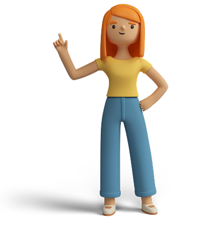
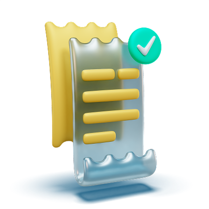

Гарантія та повернення товару
гарантія
Гарантійні зобов'язання інтернет-магазину TehnoWest.com.ua мають на увазі під собою ремонт, заміну товару або його елементів у разі несправності в період встановленого гарантійного терміну за свій рахунок.
На період гарантійного ремонту аналогічне справне устаткування не видається.
- Мінімальний термін гарантії товарів в інтернет-магазині становить 30 днів.
- Транспортні та банківські витрати оплачує покупець.
- Фірма не несе відповідальності за втрату даних на носіях інформації (HDD, SSD, FlashMemory, CD, DVD і т.п.)
- Будь ласка, потурбуйтеся про резервне копіювання важливої для Вас інформації.
Гарантія не поширюються на:
- витратні матеріали, що поставляються і використовуються разом з виробом;
- програмне забезпечення, яке поставляється разом з виробом;
- змінні носії інформації (дискети, CD, DVD, Blu-ray диски);
- додаткові аксесуари, які можуть йти в комплекті (чохол, стилус, USB кабель, зарядний пристрій і т.п.);
- елементи конструкції комплектуючих, які прийшли в неробочий стан, в зв'язку з їх природним зносом або недбалим ставленням користувача (інтерфейсні та силові кабелі; роз'єми; проводу навушників; вентилятори, встановлені на материнських платах і т. п.);
- батареї живлення і акумулятори (в тому числі на материнських платах);
Виріб не підлягає гарантійному обслуговуванню в разі:
- порушення правил експлуатації, зберігання або транспортування виробів;
- нетоварного вигляду, теплового, механічного або електричного пошкодження (наявність на - платах подряпин, перегорілих друкованих провідників і вигорілих мікросхем; відколів кристала і наслідків перегріву на процесорах)
- несанкціонованого ремонту, порушення цілісності або відсутності наклейок і пломб виробника, продавця, в т.ч. назви моделі, серійного номера, номера партії і т.п .
- виявлення всередині виробу сторонніх предметів, слідів впливу різних речовин, живих і неживих організмів;
- руйнування диска всередині CD, DVD, Blu-ray приводів.
Обслуговування проводиться за наявності цілих гарантійних пломб.
Повернення та обмін
Відповідно до законодавства України, повернення або обмін вживаної техніки не передбачено, за винятком випадків, коли в товарі виявлено суттєві дефекти, які не усунуті в рамках гарантійного обслуговування. Ми гарантуємо, що всі наші пристрої проходять ретельну перевірку, щоб забезпечити їхню повну працездатність на момент продажу. У випадку, якщо пристрій несправний у межах гарантійного терміну, і наш сервісний центр не може усунути несправність, ми запропонуємо вам обмін на аналогічний товар або повернення коштів.
Ми завжди прагнемо максимального задоволення потреб наших клієнтів і готові запропонувати вам якісну підтримку у разі будь-яких непередбачених ситуацій.
Скільки часу займає діагностика товару та ремонт за гарантією?
Діагностика товару за гарантією займає від 3 до 14 робочих днів. Дефекти та несправності, що з'явилися з вини виробника, мають бути усунені протягом 14 робочих днів від дати прийому товару на гарантійний ремонт. Цей термін може бути продовжений до 28 робочих днів, якщо несправність вимагає заміни комплектуючих, яких на даний момент немає.
Купуючи в нашому інтернет-магазині техніку, Ви погоджуєтесь з цими умовами.